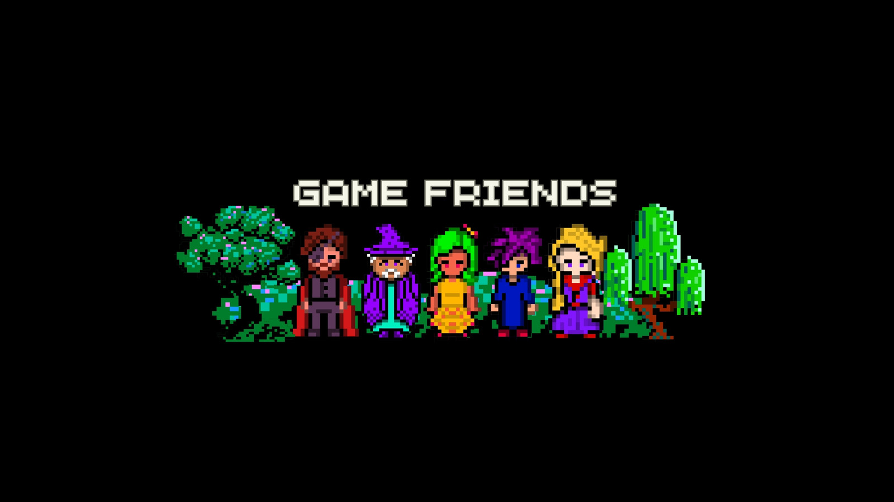
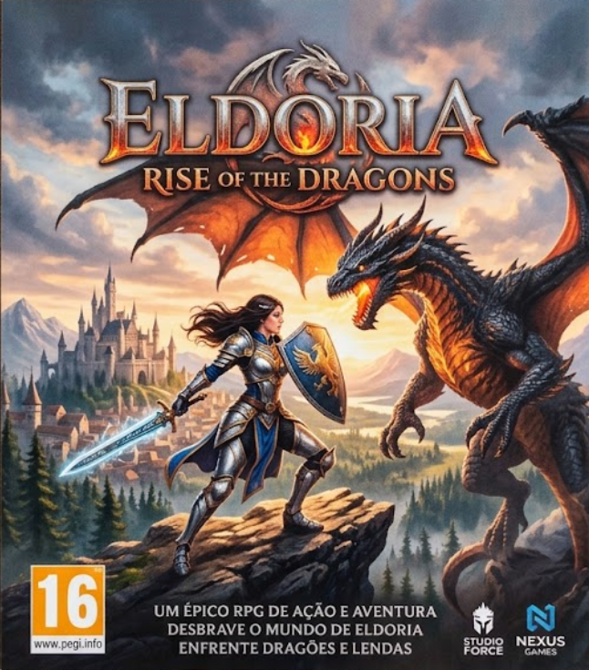
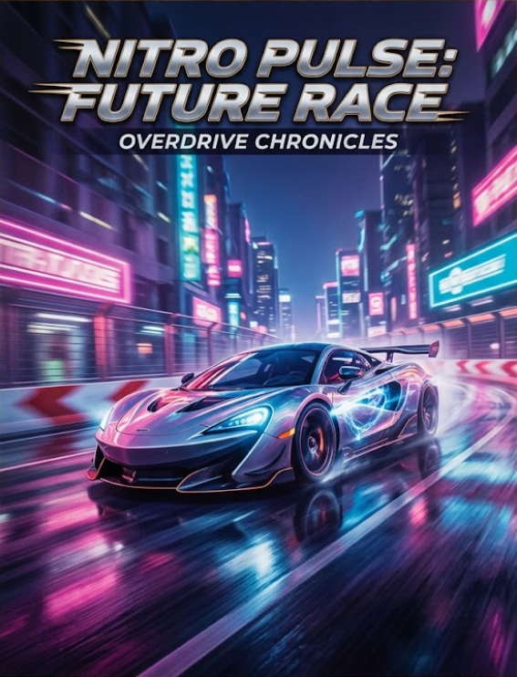
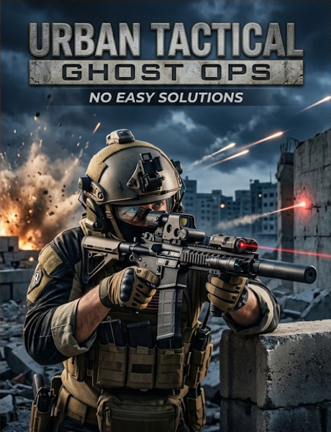

Jogos
JOGOS EM PROMOÇAO ATÈ DIA 29/09!!
Pixel Panic
Um jogo de tabuleiro online coop com seus amigos, que tem uma mesa com 200 passos formando um
quadrado gigante! o jogo tem um dado gigante!
Objetivo
Objetivo do Pixel Panic é conquistar 5 coroas! as coroas voce consegue pegando elas pelo mapa onde
ela surgir ou, juntando 200 moedas medievais para comprar uma! Sem falar dos seus minigames que
ocorrem num intervalo de 5 minutos cada. Venha jogar com seus amigos!,

Eldoria
Eldoria é um jogo de RPG de Ação e aventura. Que se passa numa era medieval onde a humanidade foi exterminada por diversos dragões lendários dormentes!
Objetivo
Em Eldoria seu objetivo é salvar pessoas de micodragões e eliminar dragões lendários! voce é uma protagonista chamada "Sissy" Que era orfã e luta pelo seu povo!

Nitro Pulse:Future Race
Nitro Pulse:Future Race é um jogo de corrida Modo História que voce acompanha "Orion" Um adulto de 30 anos que nao sabia oque queria fazer da vida, até quem uma festa qualquer ele é inscrito numa lista por um amigo bebado.. então ele vai ter que competir, Que se passa em 2125
Objetivo
Em Nitro Pulse:Future Race, O Seu objetivo é virar um astro das corridas em Nova Orleans, Voce Começa com um carro de corrida do seu pai"um carro velho" que suspostamente tem uma velocidade impressionante.. não é pra qualquer um, será que voce vai conseguir?!

The Last Path
The Last Path, é um jogo que se passa em um apocalipse zumbi, que seu objetivo será reconstruir e constituir uma nova sociedade que terá que infelizmente viver juntos desses monstros horripilantes.. o jogo se passa em 2020 em que um pandemia global acabou afetando 95% da populaçao mundial.
Objetivo
Em The Last Path, Voce terá que ir atrás de materiais, usar eles de formas inteligentes para sua proteção. voce terá que salvar diversos civis diferentes, com personalidades diferentes, e maneiras de lidar com esse apocalipse diferente.. será que voce é capaz?
.png)
Urban Tactical Ghost OPS
Urban Tactical Ghost OPS, È um jogo de tiro modo história que se passa em 2029, ele apresenta conflitos de naçoes como: Russia, USA, Brasil e Argentina, Voce se chama "Juliet" Um garoto imigrante do brasil que foi para o campo de batalha lutar a favor de seu país, mas mal sabia ele que havia um infiltrado e corrupçoes diversas por meio de tudo isso... será que era um entreterimento passado na Tv Global? será que ele era apenas uma marionete.. fica a questão.
Objetivo
Em Urban Tactical Ghost OPS, Seu objetivo é descobrir oque esta acontecendo com essa guerra, voce percebeu que tudo mudou em apenas 3 meses, era como se fosse um cenario para um filme ou uma série, oque está acontecendo? será que é tudo uma armaçao?!
